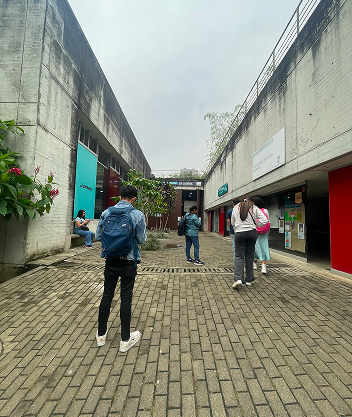
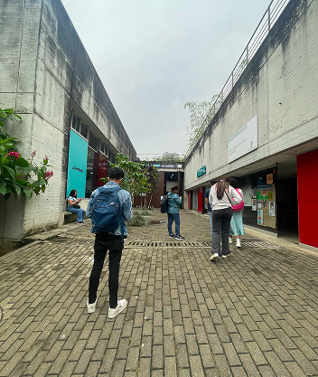

¿Qué es?
El propósito de nuestro proyecto es fortalecer las habilidades L.E.O. en los estudiantes de Create Camps de la Institución Universitaria Politécnico Grancolombiano desde realidades contextuales y cartografías literarias de ciudad. Como resultado del proceso creamos un mapa literario de algunos lugares de la ciudad con el buscando la apropiación territorial y el fortalecimiento de la identidad cultural de las y los estudiantes del Politécnico Grancolombiano.
¿Cómo se hizo?
El proyecto “Cartografías literarias de ciudad”, se inscribe en el semillero de investigación Taller
L.E.O.
de la línea de Investigación Comunicación,Cultura y Estética, de la Escuela de Educación e Innovación,
que
tiene como objetivo fortalecer habilidades de lectura, escritura y oralidad en los estudiantes de la
Institución Universitaria Politécnico Grancolombiano, a partir del análisis de realidades contextuales y
la
producción de una cartografía literaria.
En este proyecto, profes y estudiantes, integrantes del semillero, nos dimos a la tarea de buscar
relatos
sobre la ciudad. Nos encontramos con una Medellín reflejada en letras a través de la visión de múltiples
artistas. Leímos, caminamos, escuchamos, conversamos y recorrimos. Contrastamos el territorio con las
narraciones, y las lecturas con la realidad. A partir de esto proponemos esta cartografía literaria para
recorrer y reflexionar Medellín, sus historias y vivencias.
 
